¶ Most four stroke motorcycle engines made today have overhead cams. These cams must turn to work and something must turn them. The most common methods are:
- Chain Drive.
- Belt Drive.
- Shaft Drive.
- Gear Drive.
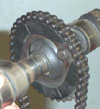 Over Head Cam Chain Drive. |
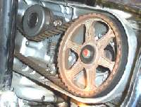 Over Head Cam Belt Drive GL1200. |
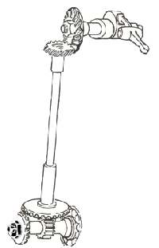 Over Head Cam Shaft Drive. Ducati 250 |
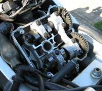 Over Head Cam Gear Drive. |
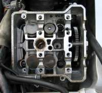 Over Head Cam Gear Drive. |
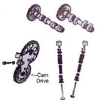 Over Head Cam Gear Drive. |
Chain drive is the most popular. There are three types of chain drive.
- Single roller chain.
- Multiple roller chain.
- HI-VO chain.
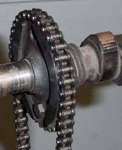 Single Roller Cam Chain. Honda CB360 |
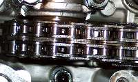 Multi Roller Cam Chain. Yamaha TX500 |
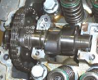 HI-VO Cam Chain. Suzuki DR350 |
Single row is one of the most popular. Single row looks like regular roller chain. Multi roller chain is two or three rows of single roller chain connected together and is somewhat rare. HI-VO has a number of plates pinned together and is used almost as much as regular single row chain. As the chain wears and the chain lengthens the Valve Timing is changed. This is why I always replace the cam chain during a top end rebuild. All the shop manuals give a maximum length for the chain, but I have found they are almost always worn out. The amount of stretch between grossly worn out and new is almost unmeasurable. I have seen chains so worn and stretched that they are sawing their way through the side of the crankcase, to the point of causing an oil leak! When compared to new these Cam Chains show almost no difference in length. Do the job right. Replace the Cam Chain AND Cam Chain sprockets, if possible.
Cam chain itself comes in one of three ways.
- Endless, with no Master Link.
- With a Clip Master link.
- With a Rivet Master link
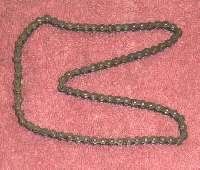 Endless. |
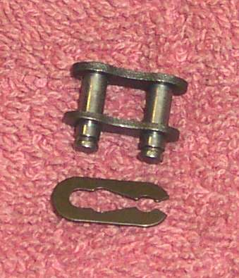 Master Link with clip. |
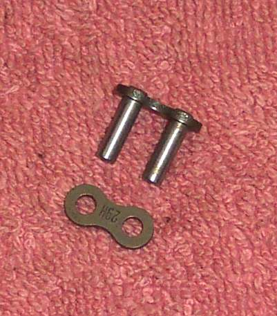 Master Link Riveted. |
Cam chains come in a number of sizes and lengths. Most all Cam Chains are endless. Being able to break the chain was handy if the engine was a multi cylinder and had the Cam Chain in the center of the engine. If you could not break the Cam Chain on these engines, you had to split the crankcases and pull the crankshaft to replace a worn chain. On a few Cam Chain sizes you used to be able to get ones with a clip master link but those are getting hard to come by. A more reliable method is to rivet the master link. Replace the Cam Chain by carefully hooking it to the old, worn Cam Chain and turning the engine over till you can get to both ends of the new chain. Now rivet the master link on and you all set. If the Cam Chain is on the side of the engine you usually can easily get to it so there is no need to break it. Sometimes you can even get a master link for a multi-roller chain. I suppose some one must make master links for HI-VO chain too but I have never seen one. In all cases, you will be best served by using an endless chain, if at all possible.
Belt drive is used on the Honda GL series and a number of Ducatis. Belts used on Belt Drives need to be replaced according to the age of the belt and according to the mileage. They may look good but if a Cam Dive Belt, or a Cam Chain for that matter, fails, it will take out one OR more valves as the engine stops turning. Replace Cam Drive Belts according to the manufacturers timetable.
Shaft drive was popular in the 1930s, 40s and 50s on a number of British bikes and some Ducatis.
Shaft drives do not wear much if the oil changes and levels are kept up, but you just don't see them anymore except when restoring an old bike.
Gear drives wear well like shaft drives. You will only see them on race bikes or a few selected street bikes like the Honda RVF 750R or VFR 750R.
There are some bikes that have totally different and innovative cam drives like the NSU Super Max 250.
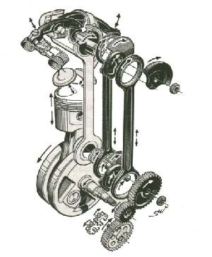 NSU Super Max. |
Cam Chains and Cam Belts are the main types of cam drives that you will run into. They have one thing in common, besides the fact that they are turning the cams. They all need to be adjusted to the right tension. To find out how ...

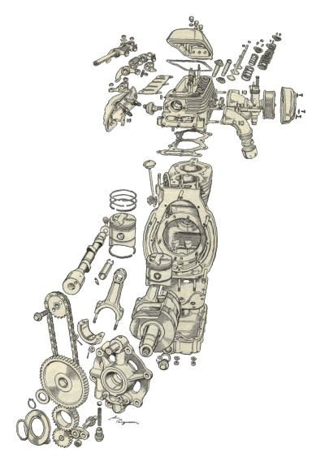 |
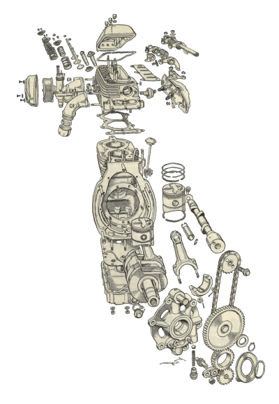 |
Copyright © 1999-2006 dansmc.com. All rights reserved.